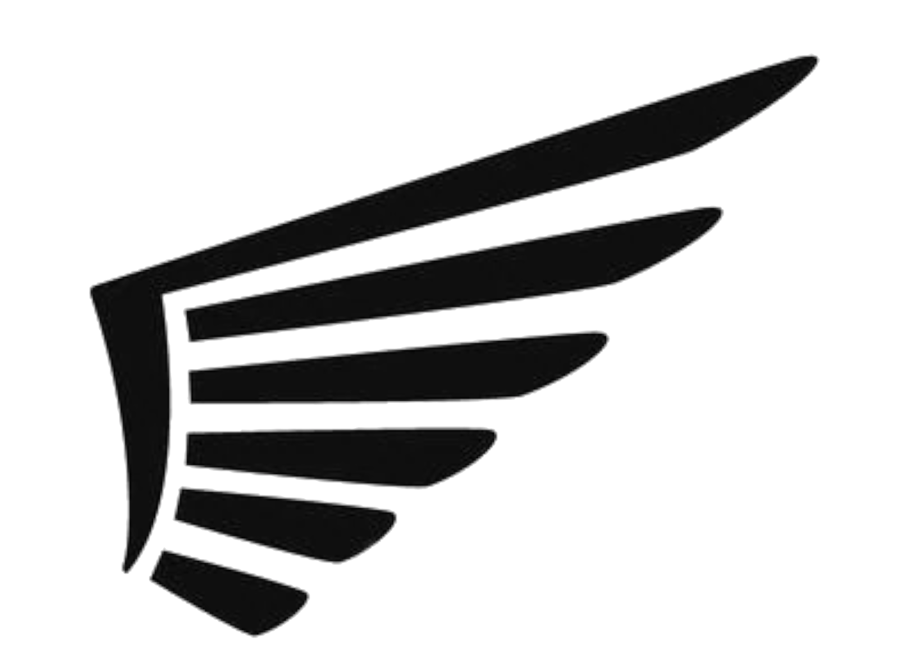

Server Spacs

Bekonnen hat alles mit einem Aternos-Server
Umstieg auf: "Athlon2" / 4gb SODIM DDR3 / 2.5 Zoll HDD
Umstieg auf: "i5 2300" / 8 gb DDR3 / HDD
Upgrade auf: "i5 2300" / 12 gb DDR3 / HDD
Aktuell: "i5 7200" / 8 gb SODIM DDR4 / m2SSD